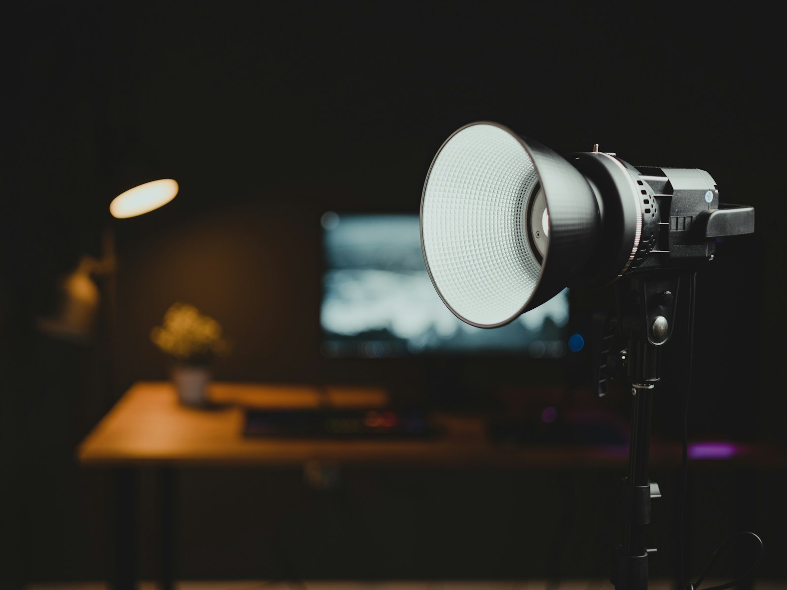
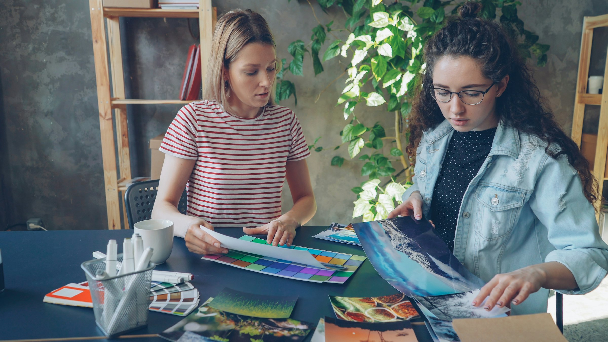
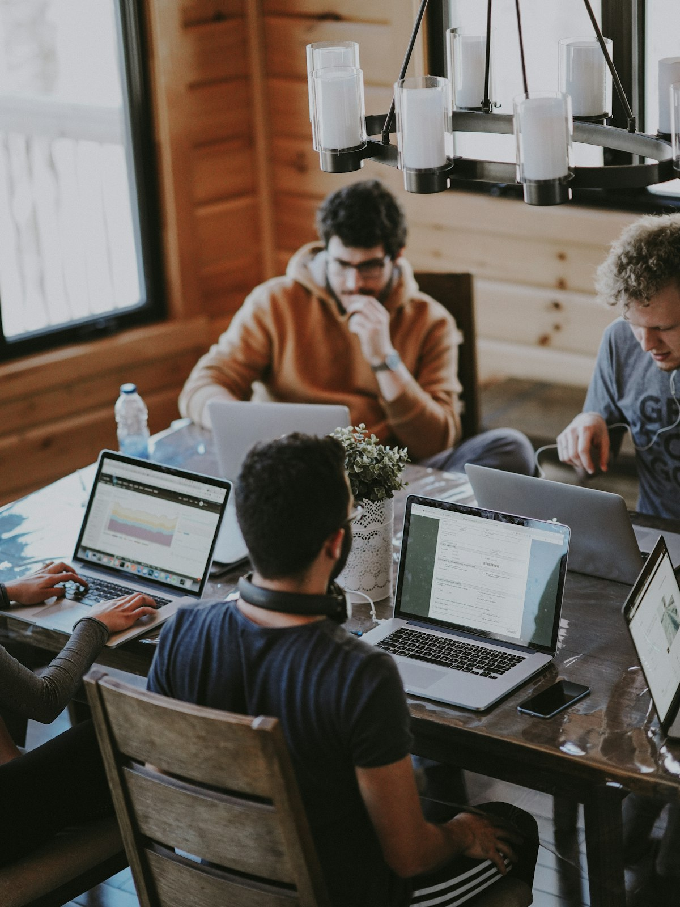
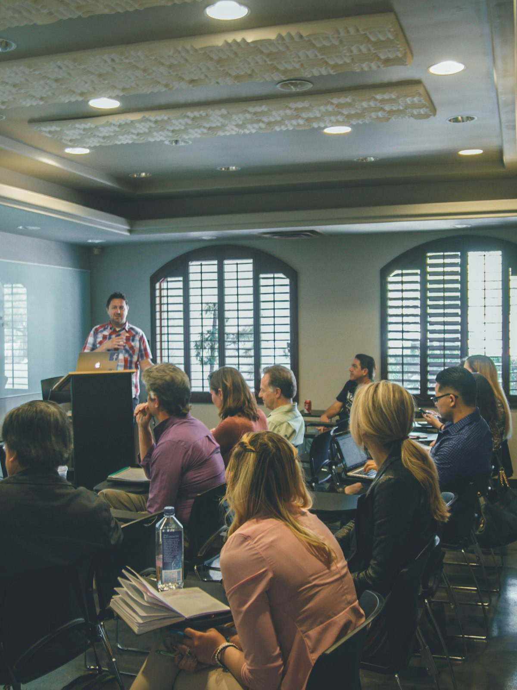
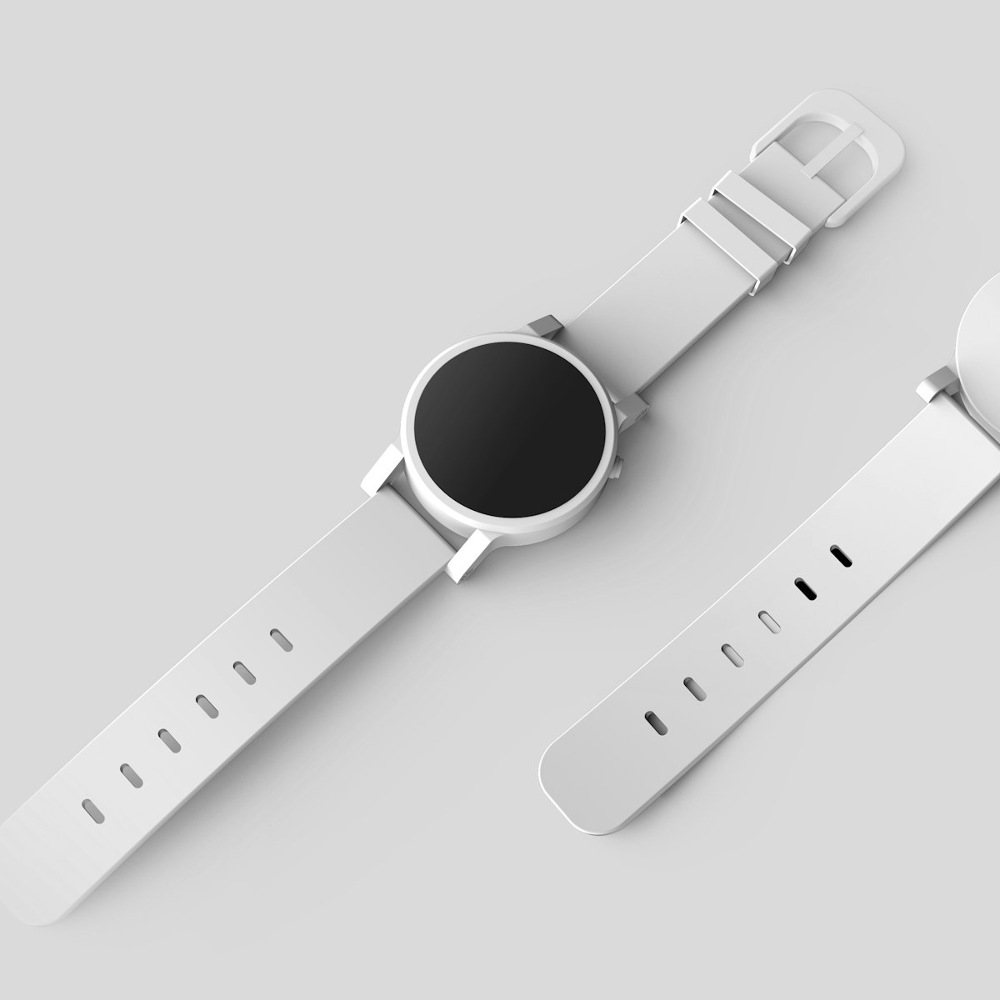
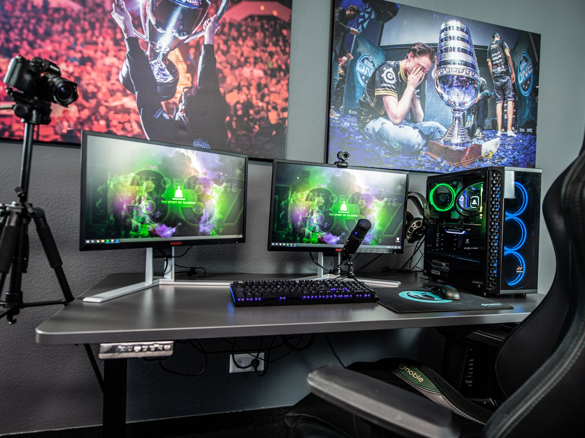

01
Understand
We understand what you’re trying to communicate, who it’s for and what success looks like.
How We Work
We understand what you’re trying to communicate, who it’s for and what success looks like.
We develop the concept, script, design direction or production approach.
Our team combines creative tools, AI and human production expertise to build the content.
We review, refine and incorporate feedback within the agreed scope.
You receive polished, platform-ready creative assets.
Ways to Work With Us
Whether you need one creative asset or an ongoing production partner, we can adapt to your requirements.

Essential Content
For businesses looking to establish or refresh their regular creative output.
Growth Content
For businesses that need a more consistent flow of video and creative content.
Advanced Creative
For businesses with larger or more sophisticated ongoing creative requirements.

Your flexible creative production team.
For businesses that need ongoing creative support across multiple formats and services.
Tell us what you need. We’ll help structure the right production model.
Talk to us about your requirementsSelected Creative Work
A growing collection of work created by Famysys Studio across design, video, AI-powered production and creative content.



